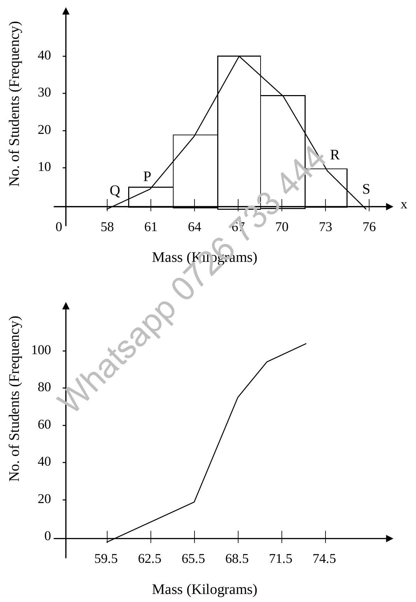
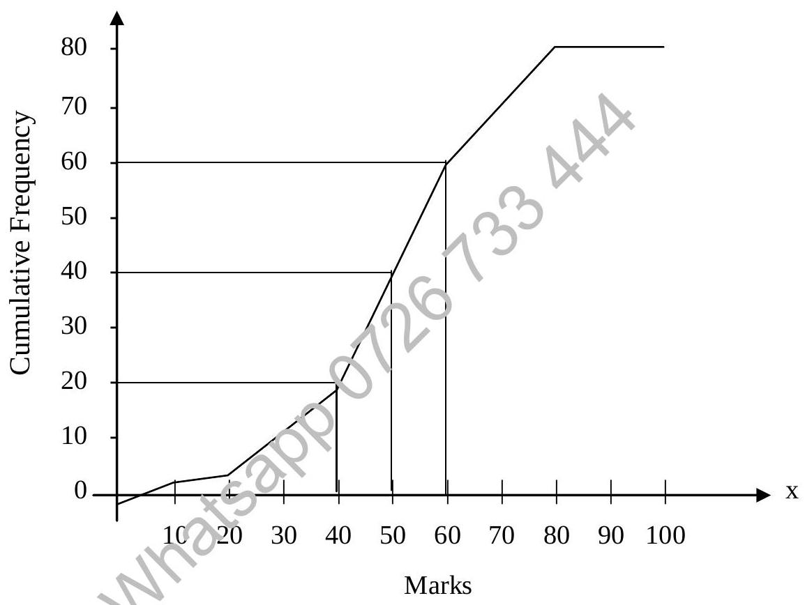

Chapter 12 : Statistics
Chapter Objectives
At the completion of this chapter, you would have learnt:
- to understand why statistics are used to solve real life problem;
- to use general guidelines to organise data into Frequency Table;
- to use various charts and graph to display data, e.g. Histogram Cumulative Frequency Diagram;
- to calculate Mean, Median, Mode as measures of central tendency;
- to calculate Standard Deviation, Variance as measures of spread or dispersion.
12.1 Introduction
Statistics are used to solve real-life problems in various situations:
- Processes that entail destructive testing of products if physical testing is carried out. E.g. To substantiate the life span of light bulbs from a factory.
- Situations are too large and too complicated if physically counting were carried out. E.g. The number of people suffering from AIDS in Asia.
- Situations where forecast or predictions are to be made based on past information. E.g. The weather forecasting.
Statistics involve the process of collecting data from a sample, make appropriate deductions from the sample. In this chapter, we will look at how to organise data into frequency table, display data in proper charts and calculate relevant quantities.
12.2 Raw Data
Raw data, once collected has to be organised numerically. An example is the set of names of male students obtained from an alphabetical listing of a public school records.
12.2.1 Arrays
An array is an arrangement of raw numerical data in ascending or descending order of magnitude. The difference between the largest and smallest numbers is called the range of the data. For example, if the heaviest weight of 100 male students is 74 kg and the lightest weight is 60 kg, then the range is 74 - 60 which gives 14 kg.
12.3 Grouped Data
12.3.1 Frequency Distributions
When summarising large masses of raw data it is often useful to distribute the data into classes or categories and to determine the number of individuals belonging to each class, called the class frequency. A tabular arrangement of these data by classes together with the corresponding class frequencies is called a frequency distribution or frequency table. The table below shows a frequency distribution of weights (recorded to the nearest kg) of 100 male students at Informatics Computer School.
| Mass (Kilogram) | Number of Students (Frequency) |
|---|---|
| 60-62 | 5 |
| 63-65 | 18 |
| 66-68 | 42 |
| 69-71 | 27 |
| 72-74 | 8 |
| Total | 100 |
The first class, for example, consists of weights from 60 to 62 kg. Since 5 students have weights falling between this class, the corresponding class frequency is 5.
Data organised and summarised as in the above frequency distribution are often called grouped data.
12.3.2 Class Intervals and Class Limits
A range of values defining a class such as 60-62 in the above table is called a class interval. The end numbers, 60 and 62, are called class limits. The smallest number 60 is the lower class limit and the larger number 62 is the upper class limit.
12.3.3 Class Boundaries
If weights are recorded to the nearest kg, the class interval 60-62 theoretically includes all measurements from 59.5 kg to 62.5 kg. These numbers, indicated briefly by the exact numbers 59.5 and 62.5, are called class boundaries or true class limits. The smaller number 59.5 is the lower class boundary and the larger number 62.5 is the upper class boundary.
Sometimes, class boundaries are used to symbolise classes. For example, the various classes in the first column of the previous table could be indicated by 59.5-62.5, 62.5-65.5, etc.
12.3.4 The Size of a Class Interval
The size of a class interval is the difference between the lower and the upper class boundaries and is also referred to as the class width, class size or class strength. For instance, the class interval size for the above example is 62.5 - 59.5 = 3.
12.3.5 The Class Mark
The class mark is the midpoint of the class interval and is obtained by adding the lower and upper class limits and dividing by two. Thus the class mark of the interval 60-62 is (60+62)/2 = 61. The class mark is also known as the class midpoint.
General rules for forming frequency distributions:
- Determine the largest and smallest numbers in the raw data and thus find the range.
- Divide the range into a convenient number of class intervals having the same size.
- Determine the number of observations falling into each class interval.
12.4 Presentation of Statistical Data
A graph is a pictorial representation of the relationship between variables. Many types of graphs are employed in statistics, depending on the nature of the data involved and the purpose for which the graphs are intended. Among these are bar graphs, pie graphs, pictographs, etc. These graphs are sometimes referred to as charts or diagrams.
12.4.1 Histogram and Frequency Polygons
There are two graphical representations of frequency distributions.
A histogram of a frequency distribution consists of a set of rectangles having
- Bases on a horizontal axis with centres at the class marks and lengths equal to the class interval sizes; and
- Areas proportional to class frequencies.
A frequency polygon corresponding to the above frequencies plotted against class marks. It can be obtained by connecting midpoints of the tops of the rectangles in the histogram.
The histogram and frequency polygon corresponding to the frequency distribution of weights are shown on the same set of axes in the graph below. It is necessary to add the extensions PQ and RS to the next lower and higher-class marks which have corresponding class frequency of zero.
12.4.2 Cumulative Frequency Distributions
The total frequency of all values less than the upper class boundary of a given class interval is called the cumulative frequency up to and including the class interval. For example, the cumulative frequency up to and including the class interval 66-68 is 5 + 18 + 42 = 65, signifying that altogether 65 students have weights less than 68.5 kg.
A graph showing the cumulative frequency less than any upper class boundary plotted against the upper class boundary is called a cumulative frequency polygon or Ogive.
Example:
The final marks for Computer Science of 80 students at ABC University are recorded in the following table.
68 84 75 82 68 90 62 88 76 93
73 79 88 73 60 93 71 59 85 75
61 65 75 87 74 62 95 78 63 72
66 78 82 75 94 77 69 74 68 60
96 78 89 61 75 95 60 79 83 71
79 62 67 97 78 85 76 65 71 75
65 80 73 57 88 78 62 76 53 74
86 67 73 81 72 63 76 75 85 77Using the above data, draw:
- A histogram,
- A frequency polygon, and
- A cumulative frequency curve.
Solution:
| Class | Class Mark | Frequency | Cumulative Frequency |
|---|---|---|---|
| 56-60 | 58 | 6 | 6 |
| 61-65 | 63 | 11 | 17 |
| 66-70 | 68 | 7 | 24 |
| 71-75 | 73 | 19 | 43 |
| 76-80 | 78 | 15 | 58 |
| 81-85 | 83 | 8 | 66 |
| 86-90 | 88 | 7 | 73 |
| 91-95 | 93 | 5 | 78 |
| 96-100 | 98 | 2 | 80 |
Cumulative Frequency Table:
| Marks (less than or =) | Cumulative Frequency |
|---|---|
| 20.5 | 3 |
| 40.5 | 22 |
| 60.5 | 57 |
| 80.5 | 79 |
| 100.5 | 80 |
Cumulative Frequency Diagram (Ogive):
Figure 12-1
From the above Figure 12-1, there are 40 students who score 52 marks or less and the other 40 score more than 52 marks. The median is 52 marks.
In Figure 12-1, 39 mark is the lower quartile, which is the mark below which 25% of the population of students score (or 20 out of 80). 61 marks is the upper quartile below which 75% of the student score, (or 60 out of 80). The range of (61 - 39) = 22 is the Inter-quartile range.
12.5 Three Statistical Quantities of Central Tendency
12.5.1 The Arithmetic Mean
The arithmetic mean or the mean of a set of n numbers $X_1, X_2, X_3, \ldots, X_N$ is denoted by $\bar{X}$ and is defined as
Example:
The arithmetic mean of the numbers 8, 3, 5, 12, 10 is
If the numbers $X_1, X_2, \ldots, X_N$ occur $f_1, f_2, \ldots, f_N$ times respectively the arithmetic mean is given by:
Example:
The arithmetic mean the numbers 5, 8, 6 and 2 which occurs 3, 2, 4 and 1 time respectively is:
12.5.2 The Median
The median of a set of numbers arranged in order of magnitude (i.e. in an array) is the middle value or the arithmetic mean of the two middle values.
Example:
The set of numbers 3, 4, 4, 6, 6, 8, 8, 8, 10 has a median of 6.
Example:
The set of numbers 5, 5, 7, 9, 11, 12, 15, 18 has a median = (9 + 11) / 2 = 10.
For a grouped data, the median, obtained by interpolation is given by
where
- $L_1$ = Lower class boundary of the median class (i.e. the class containing the median).
- $N$ = Number of items in the data (i.e. total frequency).
- $(\sum f)_1$ = Sum of frequencies of all classes lower than the median class.
- $f_{\text{median}}$ = Frequency of median class.
- $c$ = Size of median class interval.
Median of grouped data may also be obtained graphically using cumulative Frequency Diagram.
Example:
By first creating a cumulative frequency table and then a cumulative frequency diagram, estimate the median of the following survey of the examination marks of 80 students on a particular computer course.
| Marks (%) | No. of students |
|---|---|
| 0-20 | 3 |
| 21-40 | 19 |
| 41-60 | 35 |
| 61-80 | 22 |
| 81-100 | 1 |
Median is the mark below which 50% of the students' score, and therefore above which another 50% of the student score.
| Marks (Upper Boundary) | Cumulative Frequency |
|---|---|
| 20.5 | 3 |
| 40.5 | 22 |
| 60.5 | 57 |
| 80.5 | 79 |
| 100.5 | 80 |
Cumulative Frequency Table
Figure 12-1
From the above Figure 12-1, there are 40 students who score 52 marks or less and the other 40 score more than 52 marks. The median is 52 marks.
In Figure 12-1, 39 mark is the lower quartile, which is the mark below which 25% of the population of students score (or 20 out of 80). 61 marks is the upper quartile below which 75% of the student score, (or 60 out of 80). The range of (61 - 39) = 22 is the Inter-quartile range.